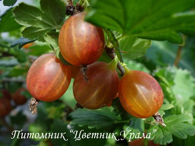
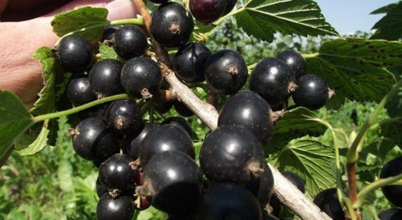

Актинидия коломикта 'ВИР-1'
Зимостойкий сорт среднего срока созревания, ленинградской селекции.
Плоды средне-крупные (массой 2-3 г), овально-цилиндрические, сужающиеся к верхушке, гладкие, зеленые со светлыми полосками. Вкус кисло-сладкий, со сла-бым фруктовый ароматом, семена почти не ощущаются. Плоды универсального назначения, созревают в конце августа.
Плодоношение начинается на третий год. Урожайность 0,8-1,2 кг с куста. Растение двудомное, требует опыления. Медленно растущая лиана, принимающая без опоры форму куста до 2 м высотой, при наличии опоры поднимается выше.
Актинидия коломикта 'Сентябрьская'
Известный зимостойкий сорт среднего срока созревания.
Плоды средне-крупные (массой до 3 г), овальные, зеленовато-желтые. Вкус хоро-ший, с тонким ароматом. Созревают в конце августа.
Куст может расти без опоры, но лучше установить прочную опору (подойдет бе-седка или сетчатый забор). Растение при этом желательно высаживать с южной стороны.
Виноград амурский 'Таежный'
Не укрывной виноград в условиях Южного Урала.
Сорт столово-винного назначения, раннего созревания. Ягоды темно-синие, вкус хороший, с легким мускатным ароматом и преобладанием сладости над кислотой. Ягоды богаты пектиновыми веществами.
Грозди конической формы, рыхлые, весом до 250 г. Урожайность высокая, по све-дениям уфимских садоводов, в благоприятные годы доходит до 60-70 кг с куста. Ягоды могут висеть, не загнивая даже в сырую погоду, до 2 месяцев.
Куст сильнорослый, корневая система глубокая
Вишня 'Звездочка'
Высокоурожайный вкусный сорт вишни.
Плоды крупные, массой 4-5 г, округлой формы, красной окраски. Мякоть очень нежная, сочная, темно-красная, имеет очень хороший освежающий кисло-сладкий вкус. Косточка плода крупная, от мякоти отделяется хорошо. Созревание плодов приходится на середину июля.
Дерево высокое, крупное, крона средней густоты, заужена кверху. Сорт частично самоплодный, устойчив к грибку, зимостойкий.
Вишня 'Маяк'

Зимостойкий среднеспелый сорт свердловской селекции.
Плоды крупные, массой 4-5 г (до 6 г), округлые, темно-красные. Мякоть красная, средней плотности, с красным соком, сочная, кисло-сладкая, приятного вкуса. Де-густационная оценка свежих плодов 4,5 балла. Косточка отделяется от мякоти хо-рошо. Цветение в средние сроки (конец мая - начало июня). Срок созревания пло-дов средний (конец июля - начало августа). В плодоношение вступает на 4 год. Долговечность растений большая - более 30 лет, с учетом проведения омолажива-ющей обрезки.
Сорт частично самоплодный, зимостойкий, засухоустойчивый.
Вишня 'Стандарт Урала'
Сорт свердловской селекции, зимостойкий, крупноплодный, отличается ранним цветением.
Плоды крупные, массой 3,5-6,5 г, форма округло-репчатая, кожица красная. Мя-коть сочная, кисловатая. Косточка среднего размера, легко отделяется от мякоти, плодоножка прочно прикреплена к плоду. Плоды созревают в начале августа, ис-пользуются на варенье, компоты и заморозку. Урожайность высокая, до 10-15 кг с куста.
Куст низкий, высотой 1,5-2 м, с раскидистой кроной. Сорт самобесплодный, поэто-му для опыления и образования плодов необходимы опылители любого сорта.
Вишня 'Уральская рубиновая'
Высокозимостойкий позднеспелый сорт с хорошим качеством плодов.
Плоды массой 4,5-5 г, округлые, темно-красные. Мякоть красная, средней плотно-сти, сок красный. Плоды привлекательного внешнего вида, оцениваются на 4,5 бал-ла, мякоть сочная, кисло-сладкая, хорошего вкуса. Отрыв плода от плодоножки су-хой. Плоды устойчивы к растрескиванию. Куст высотой до 1,5-1,8 м. Плодоносит на букетных веточках и однолетнем приросте.
Созревание плодов позднее - в августе, одновременное. Самобесплодный, требует опыление другими сортами. Зимостойкость древесины и почек высокая. Засухо-устойчив.
Крыжовник 'Белорусский красный'

Урожайный, зимостойкий сорт.
Ягоды средней величины (массой 3,5-4,0 г), темно-красные, со светлыми жилками, с гладкой кожицей, кисло-сладкого приятного вкуса. Созревают во второй поло-вине июля.
Куст средней высоты, слабораскидистый. Ветви свисающие, несильно покрыты тонкими шипами. Сорт устойчив к мучнистой росе.
Крыжовник 'Грушенька'

Бесшипный сорт среднепозднего срока созревания.
Ягоды среднего размера (4,3 г), округло-грушевидной формы, приятного вкуса.
Куст среднерослый. Побеги практически бесшипные. Рано вступает в плодоноше-ние. Высокозимостойкий и устойчивый к мучнистой росе, септориозу, вирусным заболеваниям.
Крыжовник 'Куйбышевский

Среднеспелый сорт, ягоды до 8 г, темно-вишневые, при полном созревании почти черные, сладкие и ароматные, десертные.
Ягоды созревают в конце июля – начале августа. Кожица тонкая и в то же время прочная, мякоть ароматная, великолепного десертного вкуса, вкус сладкий, ярко выраженный. Прекрасны для употребления в свежем виде. Сорт абсолютно устой-чив к мучнистой росе! Находка для каждого садовода! Практически не поражается грибными болезнями. Высокозимостоек. Урожаи хорошие и регулярные. Куст среднерослый – до 0,8 м, красивой шаровидной формы, слабошиповатый (шипы одиночные, редкие).
Крыжовник 'Снежанна
Слабошипованный среднеспелый сорт от московских селекционеров.
Масса плодов – 4-6 г. Шип только в низу побегов. Высота кустов – около 1,5 м. Плоды зеленого цвета с желто-оранжевым оттенком. Форма – овально-грушевидная.
Один куст дает 5-6 кг ягод. Максимум – 9 кг. Ягоды кисло-сладкие. Отличные вку-совые качества. Устойчив к экстремальным климатическим условиям и болезням.
Крыжовник 'Русский желтый'

Зимостойкий сорт среднего срока созревания, рекомендован для Северо-Западного и Уральского регионов.
Ягоды крупные, массой от 4 до 6 г, желто-розовые. Кожица средней толщины. Вкус хороший, кисло-сладкий (4 балла). Ягоды универсального назначения.
Сорт высокозимостойкий, засухоустойчивый, средняя урожайность 4,1 кг ягод с куста. Характеризуется хорошей самоплодностью, устойчив к американской муч-нистой росе. Куст среднерослый, среднераскидистый. Шиповатость побегов сред-няя, шипы преимущественно одинарные, расположены в нижней части и почти не мешают сбору ягод.
Малина 'Награда'

Устойчивый неремонтантный среднеспелый неприхотливый сорт с ягодами десерт-ного вкуса
Ягоды массой 2-3 г, конической формы с матовой красной окраской. Имеют очень приятный, чисто малиновый вкус с гармоничным сочетанием сладости и кислинки.
Куст дает умеренное количество побегов, поэтому нет нужды проводить излиш-нюю обрезку: все однолетние стебли оставляют для плодоношения в будущем се-зоне.
Сорт ценится за неприхотливость в выращивании, зимостойкость и хороший вкус ягод.
Облепиха 'Елизавета'

Позднеспелый сорт облепихи, практически не имеющий колючек.
Ягоды крупные (массой 0,9-1,1 г), удлиненно-овальные, оранжевые. Мякоть соч-ная, плотная, десертного кисло-сладкого вкуса, содержит до 9 % сахаров. Ягоды имеют длинные плодоножки, позволяющие легко отделять их с "сухим" отрывом. Урожайность высокая, до 12-15 кг с куста.
Формирует компактное низкорослое деревце. Благодаря серебристой листве и яр-ким ягодам имеет высокую декоративность. Сорт обладает хорошей зимостойко-стью. Требует опыления мужским растением облепихи.
Смородина черная 'Караидель'
Сорт среднепозднего срока созревания.
Ягоды крупные, кисло-сладкие (дегустационная оценка 4,8 балла), со средним ко-личеством семян. Химический состав ягод: сухие вещества - 21,7 %, сумма сахаров - 10,8 %, витамин С - 192,0 мг/100 г, пектиновые вещества - 1,1 %.
Куст среднерослый, слабораскидистый. Сорт высокозимостойкий, средняя урожай-ность 12,3 т/га, самоплодность хорошая, слабо поражается грибными болезнями, засухоустойчивый.
Смородина черная 'Валовая'

Сорт включен в государственный реестр по Уральскому и Западно-Сибирскому регионам.
Куст среднерослый, сильнораскидистый. Побеги средней толщины.
Ягоды крупные, массой 1,4 г., округлые, почти черные, с довольно плотной кожи-цей. Имеют приятный вкус. Дегустационная оценка 4,0 балла. Содержание витами-на С — 97 мг%. Назначение — универсальное.
Раннего срока созревания. Характеризуется средней урожайностью.
Смородина черная 'Валовая' устойчива к мучнистой росе, относительно устойчива к антракнозу. Засухоустойчивый сорт.
Смородина черная 'Любава'
Сорт среднепозднего срока созревания.
Куст среднерослый, среднераскидистый. Кисти длинные. Ягоды крупные, массой порядка 1,4 г, с черным матовым налетом, тонкой кожицей и сухим отрывом. Имеют нежный, освежающий, кисло-сладкий вкус. Содержание витамина С составляет 138 мг%. Дегустационная оценка свежих ягод 4,0, компота — 4,2 балла.
Сорт 'Любава' слабо поражается почковым клещом, устойчив к грибным заболева-ниям. Зимостоек.
Смородина черная 'Чишма'
Сорт среднераннего срока созревания.
Куст среднерослый, раскидистый. Ягоды крупные (1,5-3,2 г), округлые, черные, кожица средней толщины, вкус кисло-сладкий (4,7 балла). Содержание аскорбино-вой кислоты - 236,0 мг/100 г пектиновых веществ - 1,0%.
Сорт зимостойкий, средняя урожайность 14,8 т/га, самоплодность хорошая, имеет полевую устойчивость к мучнистой росе, слабо поражается антракнозом.
Смородина красная 'Андрейченко'
Сорт среднего срока созревания. Сорт включен в государственный реестр по Сред-неволжскому, Уральскому, Западно- и Восточно-Сибирскому регионам.
Куст сильнорослый (до1,5 м), полураскидистый. Ягоды крупные (до 0,7 г), крас-ные, кисло-сладкие, хорошего вкуса (4,2 балла), собраны в длинные кисти (до 8,0 см). Химический состав ягод: растворимые сухие вещества – 11,7%, сумма сахаров – 6,8%, титруемая кислотность – 1,7%, аскорбиновая кислота – 40,9 мг/100 г, кате-хины – 550,9 мг/100 г.
Урожайность 8,1 т/га при схеме посадки 3 х 1 м. Зимостойкость высокая.
Смородина красная 'Лучезарная'

Куст среднерослый, слабораскидистый. Побеги средней длины, слегка изогнутые.
Ягоды Смородины красной 'Лучезарная' крупные, массой 0,6–1,4 г., кисло-сладкого вкуса. Отрыв ягод сухой.
Содержание витамина С составляет 36 мг%. Назначение — универсальное.
Сорт среднепозднего срока созревания. Высокосамоплодный и урожайный (1,04–2,13 кг/м²).
Отличается зимостойкостью, высокой устойчивостью цветков к поздневесенним заморозкам. Устойчив к мучнистой росе, средне устойчив к антракнозу, слабо по-ражается пилильщиком и огневкой.
Смородина красная 'Уральские зори'
Куст среднерослый, слабораскидистый.
Кисть Смородины красной 'Уральские зори' средняя и длинная (8 ягод). Ягоды массой 0,4–1,0 г., округлые, ярко-красные. Имеют кисло-сладкий вкус.
Содержание витамина С составляет 24 мг%. Дегустационная оценка 3,7 балла. Назначение — техническое.
Среднего срока созревания. Урожайность 0,44–0,69 кг/м².
Сорт 'Уральские зори' средне устойчив к мучнистой росе и антракнозу. Отличается зимостойкостью.
Смородина белая 'Беляна'
Куст среднерослый, полураскидистый.
Ягоды Смородины белой 'Беляна' некрупные, массой 0,4–0,5 г. (максимум — 1,6 г.), округлой формы, желтые, прозрачные. Имеют хороший кисло-сладкий, нежный вкус. Содержание витамина С составляет 29 мг%. Дегустационная оценка 4,3 балла.
Сорт среднего срока созревания. Урожайность порядка 1,6 кг/м².
Сорт 'Беляна' высокоустойчив к мучнистой росе, среднеустойчив к антракнозу и септориозу. Отличается зимостойкостью.
Смородина белая 'Смоляниновская'
Куст сильнорослый, раскидистый.
Кисть Смородины белой 'Смольяниновская' средняя и длинная (10,5 см., 7–11 ягод), средней плотности. Ягоды довольно крупные, массой 0,6–0,9 г., белые, про-зрачные, с плотной кожицей. Вкус приятный кисло-сладкий. Ягоды долго сохра-няются на кустах, не перезревая. Семян мало и они мягкие, что бывает редко.
Дегустационная оценка 4,7 балла. Содержание витамина С составляет 35 мг%. Из ягод получается вино высокого качества. Назначение — универсальное.
Среднего срока созревания. Цветение позднее. Самоплодность не очень высокая, урожайность колеблется по годам (4–9 кг с куста).
Отличается зимостойкостью, обладает комплексной устойчивостью к грибным за-болеваниям.
Смородина белая 'Уральская'
Сорт среднераннего срока созревания, внесен в Госреестр по Уральскому ре¬гиону.
Куст средней высоты, среднераскидистый, густой
Ягоды средние (0,6-1,1 г), одномерные, округлые, желтые, количество семян сред-нее, вкус сладкий и кисло-сладкий, оценка 5 баллов.
Сорт зимостойкий, высокоурожайный (2,6-6,1 кг/куст), самоплодный, устойчивый к мучнистой росе, слабо поражается антракнозом
Смородина золотистая 'Венера'
Сорт раннего срока созревания, высокоурожайный (с 1 куста можно снять до 12 кг ягод). Созревание ягод дружное. Ягоды сочные, имеют черный цвет и почти оваль-ную форму. Кожица тонкая. Созревание дружное. Вкус кисловато-сладкий, напо-минающий вкус черники.
Плоды используют в свежем виде, из них готовят варенье, джемы, компоты и т. д.
Отличается высокой жаро- и засухоустойчивостью. Выдерживает мороз до 40 °C, устойчив к заболеваниям и вредителям.
Яблоня 'Анис Свердловский'
Сорт осеннего (начало сентября) срока созревания, включён в Госреестр РФ в 2002 г., рекомендован для Волго-Вятского и Уральского регионов.
Дерево среднерослое (до 3,5 м). Яблоки средние округло-сплющенные, вес 90–100 г. Окраска плодов бледно-салатовая с размытым багряным румянцем на большей поверхности, с природным восковым налётом; мякоть светлая сочная со сладким конфетным ароматом, как у Мельбы; вкус яблок сладко-кислый, оценка дегустато-ров 4,5 баллов из 5 возможных; хранение до 2-х месяцев, универсальное потребле-ние.
Сорта-опылители: Антоновка, Боровинка, Яндыковское, Июльское Черненко.
Сорт морозостоек, может переносить морозы в –40°С.
Яблоня 'Кушнаренковское осеннее'
Осенний сорт, получен в Башкирском НИИСХ от скрещивания сортов 'Уральское наливное' и 'Коричное новое'.
Плоды среднего размера (70-110 г), одномерные, уплощенно-округлые, равнобо-кие, слаборебристые, гладкие, правильной формы. Основная окраска плодов зеле-ная с размытым румянцем. Мякоть сочная, мелкозернистая, средней плотности, кисло-сладкая.
Плоды могут храниться до 110 дней. Транспортабельность средняя, товарность высокая.
Плодоношение у сорта регулярное, осыпаемость слабая. Сорт высокоустойчив к экстремальным условиям и парше, слабо поражается цветоедом и тлей.
Яблоня 'Кушнаренковское осеннее'
Летний сорт свердловской селекции. Съемная зрелость наступает в третьей декаде августа.
Дерево среднерослое, с прочной округлой кроной. Зимостойкость в условиях Среднего Урала хорошая.
В плодоношение вступает на 4-5 год после прививки. Самоплодная.
Плоды округло-конические, массой 80-90 г., Поверхностная окраска желто-белая, покровная отсутствует. Мякоть плотная сочная кисло-сладкого вкуса. Во влажные годы поражается паршой, в слабой степени
Яблоня 'Серебрянное копытце'
Сорт летнего срока созревания.
Деревья зимостойкие, среднерослые, скороплодные (3-4 год).
Плоды округлые, массой 80-90 г, одномерные. Основная окраска густо-кремовая, покровная в виде размытого и размыто-полосатого румянца. Мякоть плотная, мел-козернистая, очень сочная, кисло-сладкого вкуса (4,5 балла).
Плоды вызревают в середине августа, сохраняются один-полтора месяца. Остав-шись не снятыми с дерева до конца августа, наливаются, становятся полупрозрач-ными.
Сорт самобесплодный, хорошо опыляется другими сортами. В сырые годы в сред-ней степени поражается паршой.
Яблоня 'Краса Свердловска'
Зимний самобесплодный сорт.
Дерево средней высоты. Плоды округлые, некоторые — с конусной верхушкой. Покровная окраска ярко-красная. Средний вес – 140-160 г. с насыщенным прият-ным кисло-сладким вкусом. Краса Свердловска – лидер по вкусовым свойствам среди зимних яблок.
Яблоки не опадают, удерживаются на ветках до полного созревания.
В условиях южного Урала отмечается хорошая зимостойкость и высокая устойчи-вость к большинству заболеваний.
Слива 'Ванетта'
Сорт позднего срока созревания, крупноплодный (средний вес плода – 40 г, макси-мальный – до 55 г).
Плоды красивые, округлые, темно-красные, с толстым слоем воскового налета, придающим голубоватый оттенок. Кожица плотная, грубая, приросшая к мякоти, но не терпкая. Мякоть желтая, сочная, волокнистая, сладкая с сильным ароматом. Косточка небольшая, не отстающая от мякоти.
Сорт высокозимостоек и вступает в плодоношение на второй год после посадки.
Слива 'Красномясая'
Сорт среднего срока созревания.
Плоды темно-красного цвета, мясистые, сочные, имеют кисло-сладкий вкус с вы-раженным сливовым ароматом. Форма ягод круглая, бывает немного вытянутая. Кожица кислая, может горчить. Косточка небольшая, овальная, легко отделяется от мякоти. Вес плода колеблется от 20 г до 30 г.
Сорт Красномясая является самобесплодным, поэтому требует посадки опылите-лей. Плоды созревают во второй половине августа.
Слива Красномясая отличается морозостойкостью и засухоустойчивостью.
Слива 'Увельская'
Сорт позднего срока созревания.
Дерево среднерослое, крона раскидистая, средней густоты и облиственности. Плод массой 23-24 г, округлый, шов отсутствует, углубление у плодоножки среднее, кончик углубленный, острие отсутствует. Окраска кожицы красная. Мякоть желтая, текстура волокнистая, плотность средняя. Оценка вкуса – отличный (4,5 балла).
Сорт частично самоплодный, вступает в плодоношение на 4 год.
Высокая устойчивость к клястероспориозу и тле. Цветки и завязи устойчивы к кратковременным весенним заморозкам.
Слива 'Шершневская''
Среднего срока созревания.
Дерево среднерослое. Крона раскидистая, средней густоты и облиственности. Плод массой 14 г, округлой формы, шов мелкий, углубление у плодоножки средней глу-бины, форма кончика заостренная, острие отсутствует. Окраска кожицы темно-красная. Мякоть кремово-зеленоватая, текстура волокнистая, плотность средняя. Косточка хорошо отделяется от мякоти. Сорт частично самоплодный, вступает в плодоношение на 4 год.
Сорт зимостойкий, засухоустойчивый.
Черемуха 'Крупноплодная'
Урожайный, крупноплодный и зимостойкий сорт.
Дерево мощное, высотой 5 м, быстрорастущее. Цветки белые, в плотных кистях, длиной 12-14 см, по 40-45 шт. Вступает в плодоношение на 3-4 год после посадки двухлетним саженцем. Плоды весом до 1 г, чёрного цвета, с сочной мякотью, очень хорошего кисло-сладкого с терпкостью вкуса.
Сорт частично самоплоден, хорошо опыляется другими сортами черемухи.
Созревание среднераннее, дружное. Сорт универсального назначения. Плоды при-годны для сушки, производства компотов и сока.
Зимостойкость высокая. Устойчив к болезням и вредителям.